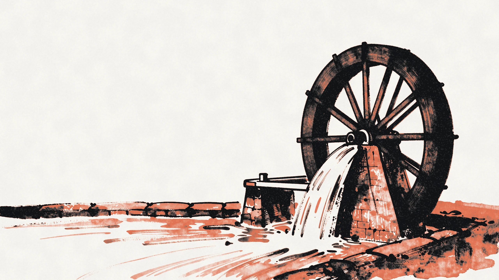
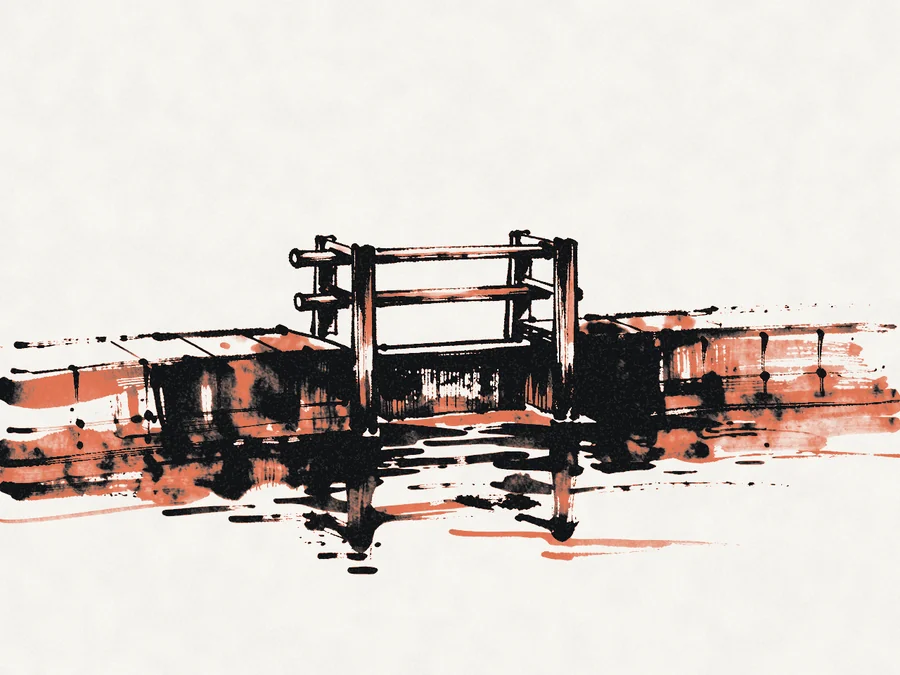
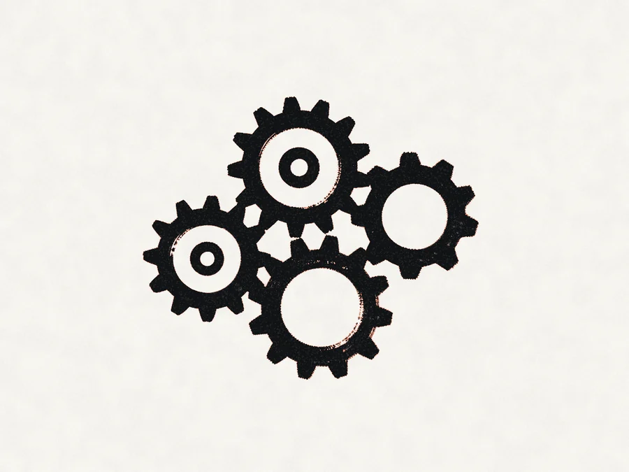
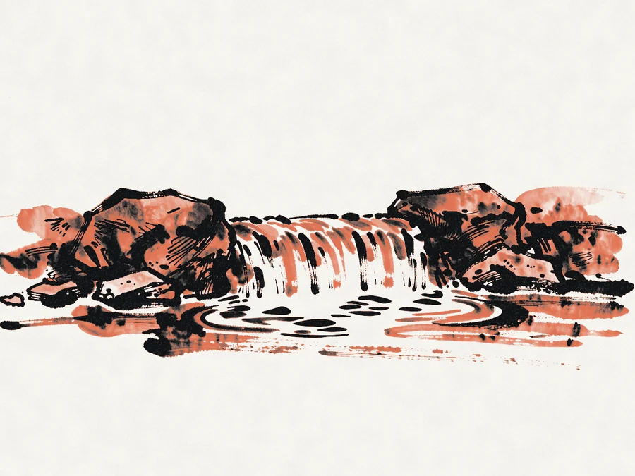

NewMillrace 3 delivers exactly once
Every job lands. Even when the server doesn't.
A durable queue for backend teams, with retries, ordering and back-pressure built in. 3 a.m. stays quiet.
Moving jobs for teams at
- Quillmark
- Ferrous Pay
- Stonechat
- Lumenrail
- Orchard Health
Built like a mill race. Steady, gated, never dry.
How it flows
A race feeds a wheel only as fast as it can turn. Millrace works the same way, from the producer's first enqueue to the worker's last acknowledgement.
The parts
Three things a queue must never do.

Never overflow
Back-pressure reaches the producer first, with a clear error it can retry on.

Never run twice
Leases, fencing tokens and idempotency keys, on by default for every job.

Never run dry
Scheduled and recurring jobs are kept in the same log, so a restart picks up the flow.
0
jobs lost in last year's chaos tests
38ms
median enqueue to start
1.4B
jobs a day on the biggest cluster
We replayed our worst night. Every invoice went out once.Tomas Reyes, platform lead at a fictional payments company